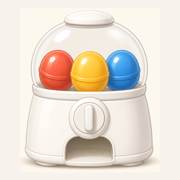

たまご便 · 圖鑑驗證、預覽與發布
可載入完整 knowledge_cards.json，或匯入增量檔（含 baseVersion）。會與線上版比對：禁止張數變少、禁止 version 倒退。
knowledge_cards.json
baseVersion
相對線上版或所選歷史版的變更摘要。
每個版本封存在倉庫 versions/，可下載完整檔或作為差異基準。
versions/
寫入倉庫需要具備 Contents 讀寫權限的 GitHub token（僅限本資料庫 repo）。Token 只暫存在此瀏覽器工作階段。成功後會更新主檔、CDN，並封存版本與索引。
公開讀取資料庫： CDN · GitHub · README